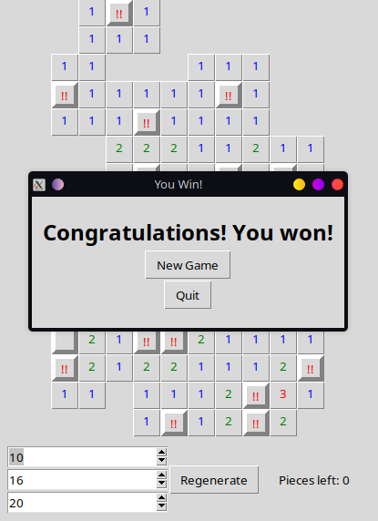
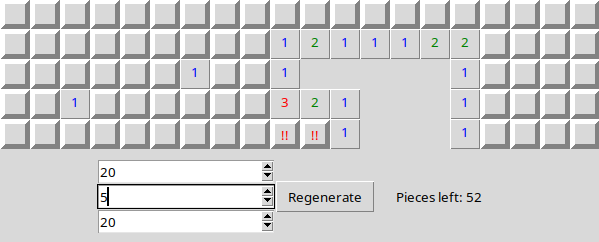
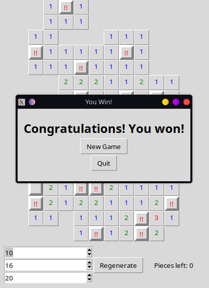
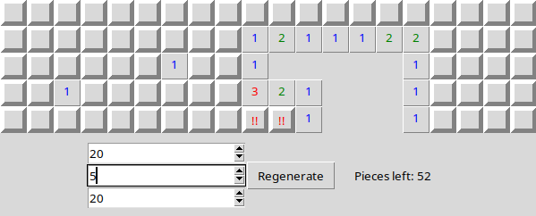

This game is a simple turn-based rpg where you battle your way out of a crypt using cards that have secret secondary effects.
The hidden effect might be bad, but it could also be good, or even something else entirely! Although you can't see the hidden effect, a card will have a stronger sheen if they are "better", giving you a hint of how much it might help. Different types of enemies have different chances to drop better or worse cards.
There is also a "draw card", which changes every turn and can be used in addition to your own cards. There's another similar mechanic, but I'll let you discover that for yourself.
As it was my first time using Godot, I was learning as the game was developed, resulting in a project that is quite thrown together and messy. That said, after release the game was updated over the subsequent few days to polish it into a state that I was happy with and genuinely enjoyed playing. For not knowing a thing about Godot before this project, I was very satisfied with the result and will definitely continue with Godot as I continue developing new games.
This game uses OpenAI's API to harness the power of ChatGPT and Dall-E for the ultimate party gaming experience. There are four minigames to play with up to six people, each involving AI-generated imagery or text in some way:
One device must host the lobby using their own OpenAI API key, and each of the players must join separately.
My role in this project was mainly in the creation and implementation of the game's sounds and music, as well as some of the art, including the main title art and lobby screen. I was also, of course, involved in the general brainstorming and design decisions, as well as group testing (it IS a party game, after all).
This is a simple and short game where you use limited energy to grow a plant towards the sun, through a randomly generated maze. You grow your plant over and over again, each time reaching further as you navigate the extensive maze in an attempt to reach the sun above. Every time your plant perishes, its energy is harvested in the soil from which your plant can be reborn.
Placing a normal stem consumes 1 energy, while placing one with a leaf consumes 3. The stem will wither and cease to grow if it is too far from a leaf or the pot. Whenever your plant dies, its remains fall back into the pot and absorbs into the soil, providing more energy based on the level of each stem segment, allowing you to begin again as an even mightier plant.
Again, the maze is randomly generated so it will be different (but completable) every time you load the game. Try it a few times if you enjoy it!
 Frog World
Frog World
In this game you control a frog to overcome enemies and eat flies to advance to the next level, and eventually encounter an unexpected foe whom you must battle.
There are different power-ups you can find throughout the levels that help in different ways, whether it be crushing enemies or catching flies.
Although the game is simple and the art is not very easy on the eyes, this game functions well and I find it quite fun to replay now and then.
I had created and developed many games before this, but this is the first game that I had actually finished and released, being that it was for a final project and had an actual due date.
In an effort to both familiarize myself with Python and Tkinter and to create a simple puzzle game for my sudoku-loving girlfriend to play, I decided on writing a version of Minesweeper, seeing as the default Tkinter GUI looked very reminiscent of the classic look.
You can set the number of spaces on both the horizontal and vertical axis, as well as the number of mines. When you lose, you have the option to continue in "Baby Mode", where the board turns blue and you can continue after hitting a mine.
 


